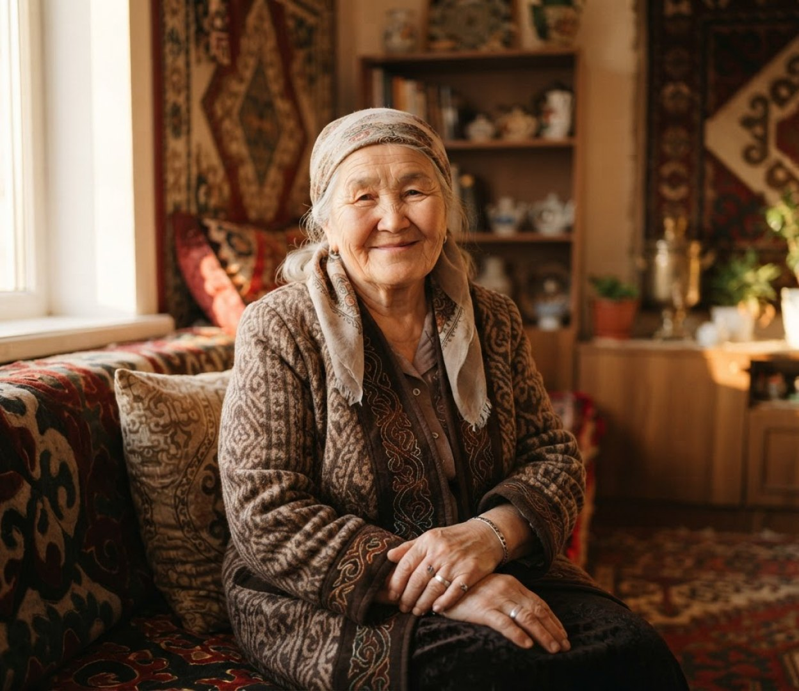
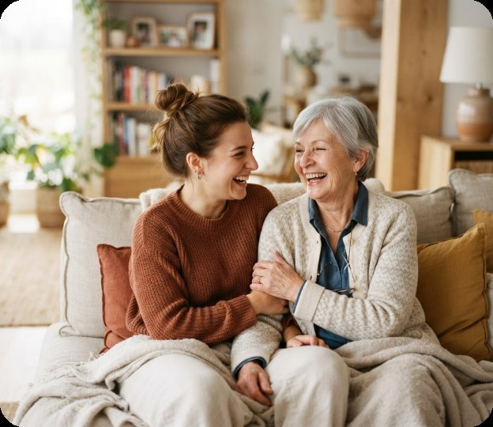

Сложные программы
Вкладки, скрытые меню и непонятные значки вызывают стресс и мешают сделать даже простое.
Голосовой помощник на казахском и русском
Голосовой ИИ-помощник для компьютера. Пожилые, незрячие и слабовидящие люди говорят задачу своими словами, а Ailan сам нажимает кнопки: пишет близким, включает музыку, напоминает о лекарствах и зовёт на помощь.
Проблема
С каждым обновлением технологии становятся сложнее, и между поколениями вырастает барьер.
Вкладки, скрытые меню и непонятные значки вызывают стресс и мешают сделать даже простое.
Интерфейсы рассчитаны на молодых: при слабом зрении и дрожащих руках попасть по кнопке трудно.
Обновления, всплывающие окна и пароли — и человек снова ждёт, пока приедут дети.
Источники: ЕНПФ (население на 1 января 2026), sozmedia.kz, energyprom.kz
MVP уже работает
13 из 13 сценариев приёмки
Решение — Ailan
Не нужно искать кнопки, меню и пароли. Скажите «Айлан» или зажмите одну клавишу и произнесите задачу на казахском или русском — Ailan сделает остальное.
Возможности
Самые нужные дела на компьютере теперь делаются самым простым способом — голосом.
«Напиши дочери Айдане, что я дома» — WhatsApp и Telegram, с вопросом перед отправкой.
«Напомни позвонить сыну в 18:30» — Ailan скажет вовремя и повторит.
«Через 10 минут напомни выпить таблетки» — бережный контроль за приёмом лекарств.
«Включи Кайрата Нуртаса» — YouTube и Spotify без поиска и кнопок.
«Помогите» — Ailan пишет и звонит доверенному человеку.
Понимает живую речь и отвечает на том языке, на котором к нему обратились.
Простой процесс
Три шага, чтобы пользоваться компьютером без стресса.
Скажите «Айлан» или зажмите клавишу Copilot и произнесите задачу на казахском или русском.
Распознаёт живую речь и понимает, что нужно сделать, даже если сказано своими словами.
Ailan сам нажимает кнопки, проверяет результат и говорит вслух, что сделал.
Для пожилых
Ailan возвращает пожилым людям уверенность и самостоятельность в цифровом мире.
Одно слово или одна клавиша. Запутаться в меню или нажать не то невозможно.
Ailan говорит вслух, что сделал, и переспрашивает перед важными действиями.
Понимает казахский и русский и отвечает на том языке, на котором к нему обратились.
Написать внукам или включить любимую песню можно без помощи детей.

Для незрячих и слабовидящих
При слабом зрении мелкая кнопка превращается в стену. С Ailan кнопки ищет не человек, а помощник.
Скажите задачу — Ailan сам найдёт нужное окно и нажмёт нужную кнопку.
Ailan озвучивает результат, а перед отправкой называет, кому и что он пишет.
Зажмите клавишу Copilot и говорите: попадать курсором в кнопки не придётся.
Этот сайт тоже можно сделать крупнее и контрастнее — кнопки «A+» и «Контраст» вверху страницы.

Для семьи
Больше не нужно переживать, что близкие не справятся с компьютером, когда вас нет рядом.
Родители сами напишут вам голосом в WhatsApp или Telegram.
Напоминания о таблетках и визитах к врачу прозвучат вовремя.
На слово «Помогите» Ailan напишет и позвонит доверенному человеку.
ИИ на казахском языке
Мы уделили особое внимание казахскому языку: Ailan понимает команды, сказанные своими словами, и отвечает уважительно, сохраняя теплоту живого общения.
«Айлан, 10 минуттан кейін дәрі ішуді еске сал»
«Жарайды, 10 минуттан кейін еске саламын.»
«Айлан, анама жаз: үйдемін»
«„Мама“ чатына „үйдемін“ деп жіберейін бе?»
Технологии должны объединять людей, а не усложнять жизнь тем, кто нам дорог.
Команда
Мы объединили искусственный интеллект и эмпатию, чтобы сделать мир вокруг нас немного лучше.
Основатель
Автор идеи Ailan и технический лидер; архитектура и разработка голосового агента: распознавание казахской и русской речи, управление программами Windows.
Сооснователь
Координация команды и развитие продукта; формирование концепции Ailan и управление процессом создания MVP.
Сооснователь
Работа с SQL и аналитикой данных; подготовка и исследование клиентских данных. Развитие компетенций в data analysis, бизнес-постановке задач и поиске решений на основе данных.
Скоро пилот
Сейчас Ailan работает на компьютерах с Windows. Скоро откроем запись в бесплатный пилот: установим и настроим Ailan вместе с вами.